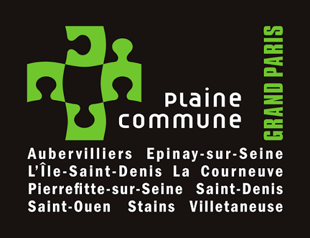

Dans le cadre de ma deuxième année de BUT Informatique à l'IUT de Villetaneuse, j'ai réalisé mon stage au sein de l'etablissement territorial PLAINE COMMUNE plus precisement dans le Direction des Systèmes d'Information Mutualisés (DSIM) en tant que Technicienne de proximité.
Ce bilan dresse une auto-évaluation de mes compétences acquises et appliquées.
J’ai travaillé au sein d’une équipe particulièrement collaborative et constructive. En effet, j’ai été amené à travailler avec différentes équipes du service informatique. Par exemple, les experts réseau qui s’occupent de la gestion et de la résolution des problèmes liés aux réseaux, ainsi que l’équipe d’exploitation (IT) qui est responsable de la gestion des serveurs, des mises à jour et du bon fonctionnement des systèmes. J’ai été amené à communiquer avec les différents membres du service informatique, notamment pour transmettre des tickets aux services concernés Par exemple, lorsqu’un problème de réseau survenait, j’envoyais le ticket aux administrateurs réseau, car ils ne sont pas situés sur le même site que nous. Chaque équipe joue un rôle complémentaire. Par exemple, ce sont les experts réseau qui créent les comptes utilisateurs et attribuent les droits d’accès, sauf dans certains cas particuliers. Ensuite, les techniciens de proximité, l’équipe où je travaille, interviennent pour tout ce qui concerne le matériel, comme l’installation des images systèmes sur les ordinateurs avec les identifiants des utilisateurs ou encore la configuration des téléphones fixe et portable. Ainsi, le fonctionnement du service informatique repose entièrement sur un travail collaboratif entre les différentes équipes. J’ai également eu l’occasion d’échanger avec les autres stagiaires présents dans la structure, ce qui a favorisé le partage d’expérience et l’entraide. J’ai été principalement encadré par mon responsable, Adel HASBELLAOUI, manager de l’équipe de proximité. Par ailleurs, j’ai travaillé en étroite collaboration avec les techniciens de proximité, au nombre de 12. Cette proximité facilitait l’accès à l’information et me permettait de solliciter rapidement de l’aide ou des précisions en cas de difficulté.

Plaine Commune est un Établissement public territorial (EPT) qui regroupe 8 villes et 1 commune déléguée au nord de Paris. Elles travaillent ensemble au sein d’une même structure intercommunale. L’établissement intervient sur des domaines liés à la gestion et au développement du territoire. Ses missions concernent principalement l’aménagement urbain, les services publics locaux et le développement économique. Il participe notamment au développement économique du territoire en accompagnant les entreprises, en favorisant l’emploi et en soutenant certaines activités comme l’économie numérique ou l’économie sociale et solidaire.
je fais partie de la direction des systèmes d’informations mutualisés (DSIM) de Plaine Commune. Je travaille avec les techniciens de proximité niveau 2 Ainsi que d’autres stagiaires. Les techniciens Se situent également au même niveau hiérarchique que moi au sein de l’équipe.
Concernant l’environnement et l’espace de travail, celui-ci était organisé en open space, ce qui contribuait à atténuer la perception des barrières hiérarchiques et à favoriser les échanges et le travail d’équipe. Mon poste de travail se situait à proximité de celui de mon tuteur, ce qui facilitait les interactions quotidiennes, les conseils et les retours constructifs favorisant mon apprentissage.
Le service des Ressources Humaines reçoit quotidiennement un grand nombre de courriels :
En l'absence d'un système de classement structuré, certains messages étaient difficiles à retrouver et pouvaient être oubliés parmi les anciens courriels.
Cette situation engendrait une perte de temps importante et compliquait le suivi des demandes.
La solution retenue a consisté à créer une arborescence de dossiers dans Outlook, associée à des groupes de gestion dédiés à chaque type de demande.
L'agent d'accueil analyse les courriels reçus puis les oriente vers le dossier approprié grâce aux fonctionnalités d'Actions rapides d'Outlook.
Les dossiers sont organisés selon trois états :
Cette organisation améliore la lisibilité, facilite le suivi des dossiers et optimise le temps de traitement.
Ce développement m'a permis de consolider les compétences liées à l'analyse des besoins utilisateurs et à la mise en œuvre d'une solution répondant à une problématique métier concrète.
J'ai notamment appris à recueillir les besoins des utilisateurs, à proposer une organisation adaptée et à configurer des outils collaboratifs en tenant compte des contraintes du service.
Cette réalisation m'a également permis de développer mon autonomie, ma capacité d'analyse et ma méthodologie de travail. J'ai compris l'importance d'échanger régulièrement avec les utilisateurs afin de faire évoluer la solution selon leurs retours.
Avec du recul, je considère avoir atteint les objectifs fixés tout en renforçant ma capacité à concevoir des solutions simples, efficaces et adaptées au contexte professionnel.
L'une des principales difficultés rencontrées durant mon stage concernait la gestion des tickets, particulièrement au début de la période de stage. En effet, j'avais à traiter un volume important d'environ 100 tickets. Ma première tâche consistait à trier ces tickets en fonction de leur niveau de priorité, du type de matériel concerné ainsi que de la disponibilité des techniciens compétents. Par exemple, lorsqu'un ticket nécessitait une intervention sur une panne réseau et que le technicien réseau était absent ou en congé, j'informais le client de la situation par message et plaçais le ticket en attente. Cette méthode me permettait de garder une trace des demandes déjà consultées et d'assurer un suivi efficace. Afin de ne pas oublier certaines informations importantes, j'ai également mis en place un système de prise de notes dans un fichier dédié, dans lequel je consignais les éléments essentiels relatifs aux interventions. Par ailleurs, je devais établir des priorités dans le traitement des tickets. Ainsi, les demandes émanant des directeurs ou des responsables de service étaient généralement traitées en priorité. Une fois ces tickets pris en charge, je poursuivais avec les autres demandes, en tenant compte notamment de la disponibilité du matériel nécessaire. Lorsque le matériel requis n'était pas disponible, les tickets concernés étaient également placés en attente jusqu'à leur prise en charge.
Cette responsabilité entrainait des fois une pression et du stress, surtout lorsque le volume de tickets était élevé. Cependant, cette expérience m'a permis de développer mes compétences en gestion du temps, en organisation et en communication avec les clients et les collègues.
Exemple d'intervention sur un problème réseau :
Au cours de mon stage, j'ai été amené à résoudre un incident concernant un utilisateur qui ne parvenait pas à accéder à une imprimante réseau. Après une première analyse, j'ai constaté que le problème provenait du fait que l'imprimante et l'ordinateur portable de l'utilisateur n'étaient pas configurés sur le même sous-réseau.
Afin d'identifier précisément l'origine de la panne, j'ai d'abord récupéré l'adresse IP du poste utilisateur à l'aide de la commande *ipconfig*. Je me suis ensuite connecté à l'interface de configuration de l'imprimante afin de consulter ses paramètres réseau. Cette vérification a confirmé que l'adresse IP de l'imprimante appartenait à un sous-réseau différent de celui du poste utilisateur.
Pour résoudre le problème, j'ai désactivé le protocole DHCP de l'imprimante afin de lui attribuer une adresse IP statique adaptée au réseau concerné (10.2.6.13). Une fois la nouvelle configuration appliquée, j'ai effectué un test de connectivité depuis le poste de l'utilisateur à l'aide de la commande *ping*. Le test s'est révélé concluant, confirmant ainsi que l'imprimante répondait correctement et que la communication réseau était rétablie.
Cette intervention m'a permis de développer une méthodologie de diagnostic rigoureuse face aux incidents réseau. J'ai notamment acquis les bons réflexes pour ce type de panne, tels que la vérification systématique de la configuration IP, l'identification du sous-réseau utilisé, l'analyse des paramètres DHCP ainsi que la réalisation de tests de connectivité. Plus généralement, cette expérience a renforcé mes compétences en administration réseau et m'a permis de gagner en autonomie dans la résolution d'incidents techniques similaires.
Ce stage a mis en lumière certains points que je dois encore améliorer, notamment la gestion du stress face à des situations complexes ainsi que l'approfondissement de certaines connaissances techniques.
Cependant, la mise en pratique de mes connaissances théoriques m'a permis de confirmer ma capacité d'adaptation rapide à un environnement professionnel réel et de renforcer mes compétences techniques et relationnelles.